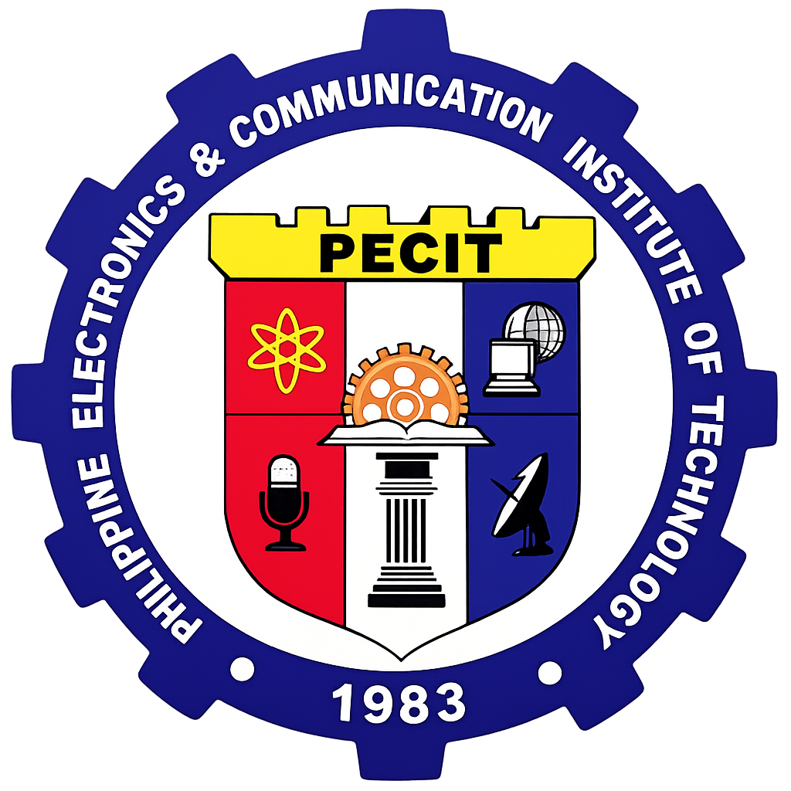
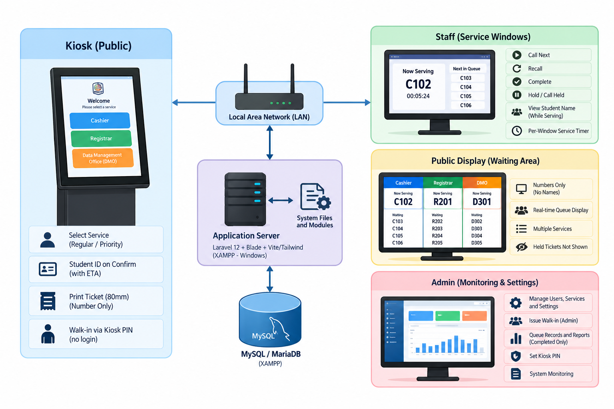
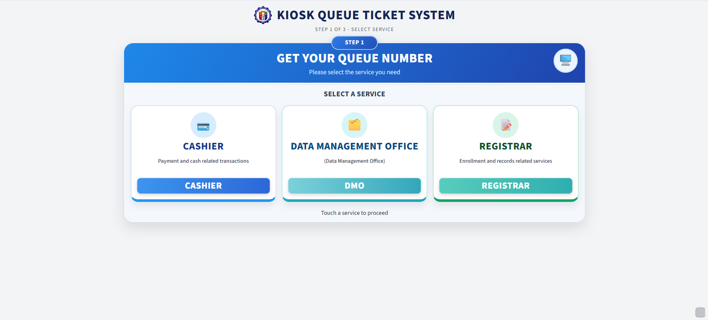
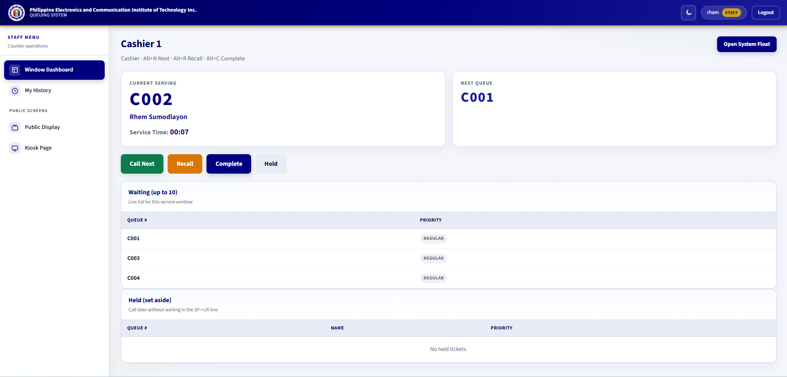
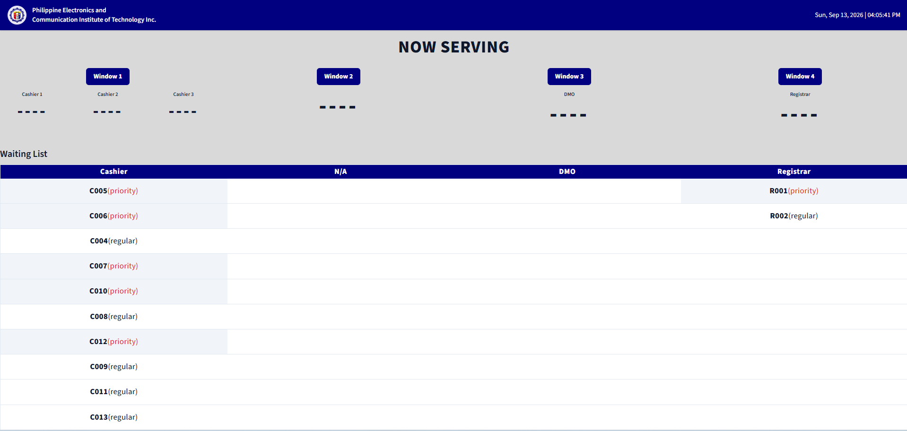
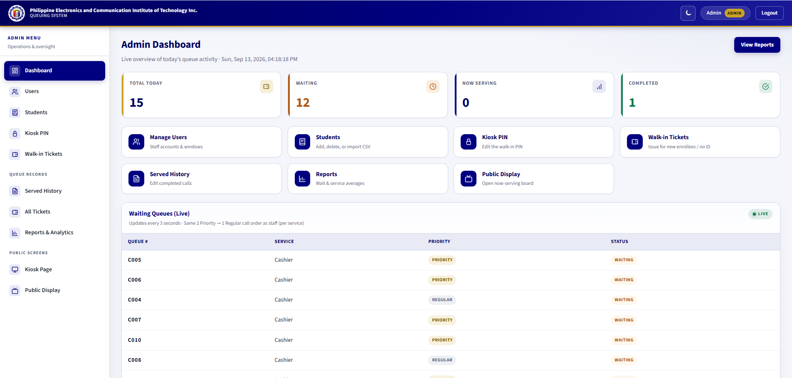

Standalone Kiosk-Based Queuing System with Thermal Printer for Student Service Offices at PECIT
September 16, 2026 · AVR Conference Room, New Building, PECIT, Butuan City
Defense
2026
01Project identification
Standalone Kiosk-Based Queuing Management System with Thermal Printer for Student Service Offices at Philippine Electronics and Communication Institute of Technology (PECIT)
Mike D. Bedrona · Niño Angelo M. Malicay · Omar O. Bayabao · Rhem A. Sumodlayon · Ron Matthew F. Arquisola
Carlos S. Gerardo · College of Computer Studies, PECIT
Dean: Daryll A. Cabagay, MSIT · Program Head: Zoren Estrada Bajao
September 16, 2026 · AVR Conference Room, New Building, PECIT, Butuan City
02Background / Problem
- PECIT Cashier, Registrar, and DMO handle student payments, records, and data transactions.
- Clients currently wait in a manual first-come-first-served line.
- Effects: unclear order, line cutting, weak priority handling, crowding, and no shared view of who is waiting.
- Staff cannot coordinate several windows from one organized queue.
- PECIT needed a standalone LAN kiosk that still works when the internet is down.
The problem is not the absence of computers. Arrival order in a physical line is the only queue rule.
03Statement of the Problem
How can a standalone kiosk-based queuing management system with a thermal printer replace manual first-come-first-served lining with an organized, monitored, and coordinated queue at PECIT?
- 01Organize Cashier, Registrar, and DMO transactions instead of a physical line.
- 02Check Student ID or authorized walk-in before a number is issued.
- 03Give an 80mm ticket and serve priority fairly across shared windows.
- 04Let clients and windows see who is serving and who is waiting.
- 05Evaluate functionality, usability, efficiency, reliability and accuracy, and satisfaction.
specific
problems
04Project Objectives
General objective
Design, develop, and implement a standalone kiosk-based queuing system with a thermal printer for PECIT student service offices.
- 01Develop a standalone kiosk system for Cashier, Registrar, and DMO.
- 02Confirm with Student ID or authorized kiosk-PIN walk-in before numbering.
- 03Print an 80mm ticket and call 2 Priority → 1 Regular across shared windows.
- 04Provide a real-time public display and staff monitoring.
- 05Evaluate with testing, expert review, and UAT (ISO/IEC 25010-aligned).
Every later result maps back to these five. This study does not claim a measured drop in waiting time.
objectives
05Scope and Limitations
Scope
- Users: students, walk-ins, staff, administrator
- Offices: Cashier, Registrar, DMO
- Modules: Kiosk, Staff, Administrator, Display
- Platform: LAN · Laravel 12 · MySQL · 80mm XP-Q90EC
- Cashier 1–3 share one waiting queue
Limitations
- No online reservation, mobile app, SMS, or cloud admin
- Not all campus offices
- RFID/NFC is not in this build — listed as later work
- No second student ticket while one is still in the queue
- No claimed measured cut in waiting time
Built for PECIT Cashier, Registrar, and DMO on a local LAN — not an online reservation product.
06Proposed Solution
3 steps
number only
2P → 1R
numbers only
| Existing | Proposed |
|---|---|
| Stand in a physical line | Start at the kiosk (service → priority → confirm) |
| Staff call by who is next in line | Call Next by system order; Hold / Call Held |
| No ticket, no public board | Number-only ticket and display |
A name may appear on confirm so the student can check it. It is never printed or shown on the public display.
Kiosk
3 steps
07System Architecture

If the internet drops, the queue can still run on the local network. No cloud service is required for daily operations.
08System Development Methodology
Waterfall was used because the campus process was already defined: lock the queue rules, then build and test them.
Four modules: Student Kiosk · Staff · Administrator · Queue Display.
09Major System Features




Each feature answers a specific problem: organize the line, confirm identity, print a ticket, show the queue, and report completed work.
10Technology Stack
queuing_systemLaravel keeps queue rules on the server (fair claim, one open student ticket, PIN check). Local assets keep the kiosk usable offline.
11Testing and Evaluation
- Where: testing and rating at Cashier, Registrar, and DMO, plus a system demonstration for the IT expert.
- Form: ISO/IEC 25010 is the basis of the evaluation form only — not a certification.
- IT expert: one expert who tested the system; same five areas, five items each; not mixed into 4.55.
- Office users (UAT): Functionality, Usability, Efficiency, Reliability and Accuracy, User Satisfaction.
- Also checked: kiosk rules, print, Call Next lock, Hold, display, and admin reports on the LAN.
The 4.55 table is UAT only. Efficiency is a perception score, not a measured cut in waiting time.
12Results and Findings
| Evaluation area | Mean | Interpretation |
|---|---|---|
| Functionality | 4.55 | Strongly Agree |
| Usability | 4.55 | Strongly Agree |
| Efficiency | 4.53 | Strongly Agree |
| Reliability and Accuracy | 4.53 | Strongly Agree |
| User Satisfaction | 4.57 | Strongly Agree |
| Overall | 4.55 | Strongly Agree |
Functions operated as intended on the LAN: confirm, print, fair call, Hold, number-only display. Guard cannot log in. No percentage reduction in waiting time is claimed.
13Objectives vs. Results
| Specific objective | Implementation | Evidence | Status |
|---|---|---|---|
| 1. Organize Cashier, Registrar, DMO | Shared service queues; 3-step kiosk | Functional tests of issue and Call Next | Achieved |
| 2. Confirm before numbering | Student ID lookup; kiosk-PIN walk-in | Unknown ID and second open ticket rejected | Achieved |
| 3. Ticket and fair priority | 80mm number-only; 2 Priority → 1 Regular | Print path; no duplicate claim on two cashiers | Achieved |
| 4. Real-time monitoring | Display + staff panel, same call order | Names and held tickets off the public view | Achieved |
| 5. Evaluate the system | Tests, expert review, UAT | Overall mean 4.55, Strongly Agree | Achieved |
14Conclusion
- 01A standalone kiosk can replace the manual line at the selected offices.
- 02Confirmation (Student ID or PIN walk-in) works before numbering.
- 03The ticket is a clear reference; 2 Priority → 1 Regular is fair on shared windows.
- 04Display and staff panel give a real-time number-only view.
- 05UAT 4.55 supports acceptance under ISO/IEC 25010-aligned items.
A practical replacement for the manual line. No claimed measured cut in waiting time.
15Recommendations / Future Enhancements
Now (implemented)
- Deploy kiosk, printer, display, staff PCs, and LAN as specified.
- Orient staff on Confirm errors, walk-in PIN, Hold, and Call Held.
- Keep the student allowlist and PIN current; back up MySQL.
- Use done-only reports; do not treat Hold as Complete.
Later (not built)
- Record actual wait and service times if PECIT wants a measured comparison.
- RFID/NFC tap at confirm as another way to read a Student ID, still number-only on print and display.
- Optional SMS / QR status — still no names on print or display.
- Remote reserve would still require ID or authorized walk-in.
- More offices only if they share the same local rules.
Thank you
Questions · Comments · Clarifications
College of Computer Studies · PECIT · BS Information Systems
is open